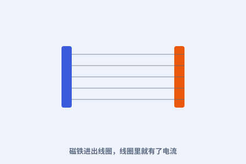

一、前人卡在哪里
1820 年奥斯特发现“电能生磁”之后，全欧洲都在问它的反问题：磁能不能生电？许多人都试过把磁铁放在导线旁边，却一无所获——因为磁铁静静地待着，什么也不会发生。

二、那个铁环实验
法拉第在一个软铁环上绕了两组线圈：一组接电池，一组接电流计。他发现，只有在接通或断开电池的那一瞬间，另一组线圈里才会跳出一丝电流。
三、关键不是磁，是“变化”
他很快明白：决定电流的不是磁场有多强，而是穿过线圈的“磁通量”变化得有多快。磁铁插入得快，电流就大；插到底不动，电流立刻归零。
四、法拉第定律
这条规律后来被写成“法拉第电磁感应定律”：感应电动势的大小，正比于磁通量的变化率，也正比于线圈的匝数。匝数越多、动得越快，电就越强——你可以在上面的实验里亲手拖一拖。